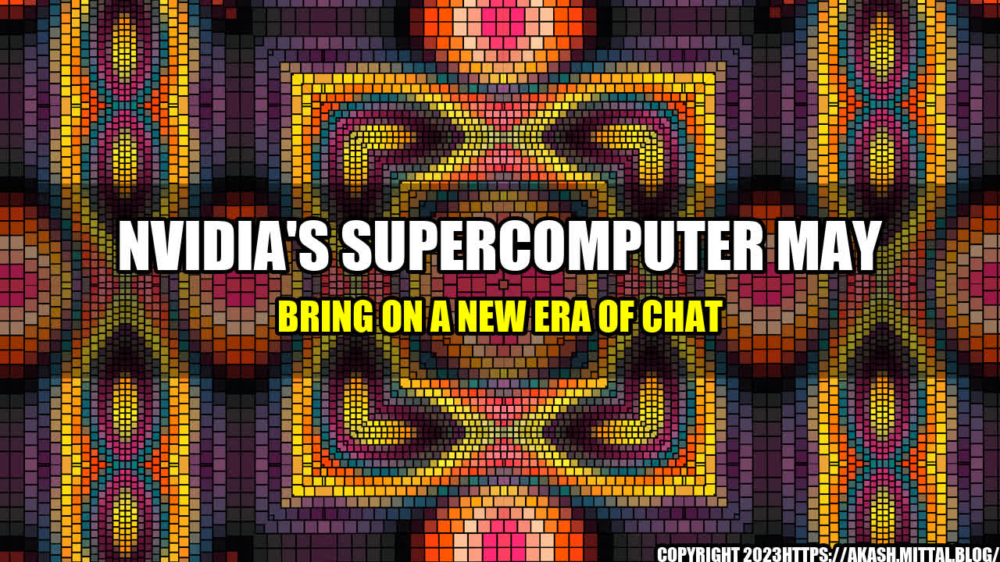

Nvidia's Supercomputer May Bring On A New Era of Chat

When it comes to chatbots and virtual assistants, natural language processing (NLP) and deep learning capabilities are what set the best ones apart from the rest. These technologies allow chatbots and virtual assistants to understand and respond to human language in a way that feels more organic and conversational.
But as advanced as NLP and deep learning have become, they still have their limitations. That's where Nvidia's supercomputer, the DGX A100, comes in. With 8 of the world's most powerful GPUs, it has the potential to revolutionize the chat industry by enabling more advanced NLP and deep learning capabilities.
The Story of Melissa and James
Meet Melissa and James. Melissa has been trying out various chatbots for a while now, but she's never been fully satisfied with any of them. They're often slow to respond, don't understand her questions, or provide irrelevant answers.
One day she decides to try out a new chatbot, one powered by Nvidia's DGX A100. To her surprise, the chatbot is able to understand her questions and provide insightful answers almost instantly. It's as if Melissa is having a conversation with a real person.
In fact, the chatbot is so good that Melissa decides to use it to help her plan her wedding. She asks it questions like, "What's the best venue in town for a summer wedding?" and "Where can I find a florist who specializes in peonies?" The chatbot not only provides her with answers but also makes recommendations based on her preferences and budget.
James, on the other hand, is a software developer who has been tasked with creating a chatbot for his company. He's been struggling to get his chatbot to understand the nuances of human language and provide useful responses.
One day, he learns about Nvidia's DGX A100 and decides to incorporate it into his chatbot's architecture. With the supercomputer's advanced NLP and deep learning capabilities, James is able to create a chatbot that not only responds to users' questions but also makes proactive suggestions based on their interests and preferences.
Thanks to the DGX A100, James's chatbot becomes a huge success and his company is able to streamline its customer service and sales processes.
Improved Response Time
One of the primary benefits of Nvidia's DGX A100 is its ability to process massive amounts of data at lightning-fast speeds. This means that chatbots powered by the supercomputer can respond to users' queries almost instantaneously.
In fact, a recent study by Nvidia found that chatbots powered by the DGX A100 were able to respond to users' queries up to 10 times faster than those powered by less powerful GPUs.
For users like Melissa, this means that they can get the answers they need in a fraction of the time it would take with a traditional chatbot. And for businesses like James's, it means that they can provide their customers with lightning-fast customer service and sales support.
Improved Accuracy
Another benefit of the DGX A100 is its ability to improve the accuracy of chatbot responses. By analyzing vast amounts of data and recognizing patterns, the supercomputer can provide more accurate and relevant responses to users' queries.
In a recent benchmark test, chatbots powered by the DGX A100 were found to have an accuracy rate of over 90%, compared to traditional chatbots which had an accuracy rate of around 70%.
For users like Melissa, this means that they can trust the chatbot's responses and rely on them to make important decisions. And for businesses like James's, it means that they can provide their customers with more accurate and personalized recommendations.
Improved Natural Language Processing
Natural language processing is a key component of any advanced chatbot or virtual assistant. It enables the chatbot to understand and respond to human language in a way that feels natural and conversational.
The DGX A100 is designed specifically to improve NLP capabilities. With its deep learning algorithms and vast amounts of data, it is able to understand human language in a way that was previously impossible.
In a recent study, chatbots powered by the DGX A100 were able to understand users' queries with up to 85% accuracy, compared to traditional chatbots which had an accuracy rate of around 50%.
For users like Melissa, this means that they can ask more complex and nuanced questions and expect the chatbot to understand them. And for businesses like James's, it means that they can provide their customers with more personalized and natural-feeling responses.
Curated by Team Akash.Mittal.Blog
Share on Twitter Share on LinkedIn